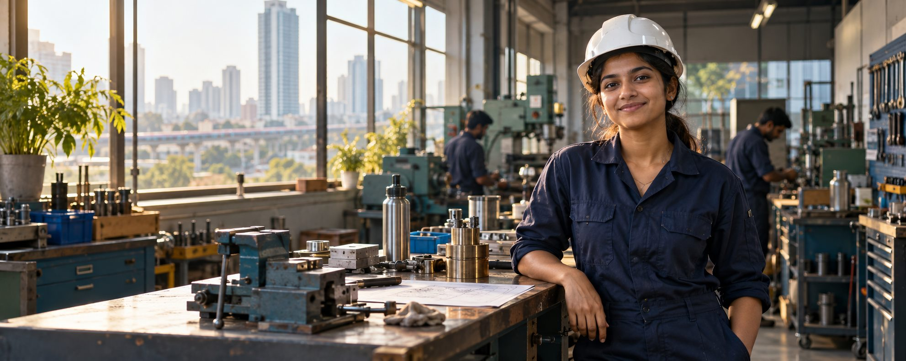
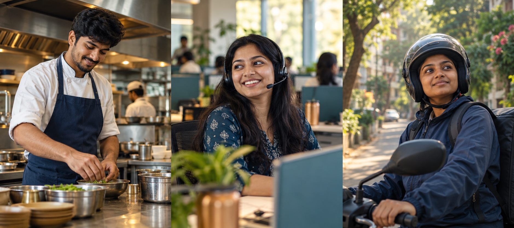

Genuine opportunities
Clear role details, pay expectations and a way to ask questions before you apply.
See how we list roles ↗नौकरी खोजें, लोगों से जुड़ें, भरोसेमंद जानकारी पाएं
और नए शहर में अपना ठिकाना पाएं।
Join 5,000+ people
building their journey

Jobs, people, places and support for the whole journey.
See the real work environment, roles and experiences before you apply.
Starting somewhere new is easier when someone’s been there. Meet local workers, ask what the job is really like, or find a friendly face in your field.
Meet people doing the workHonest advice from people in your field.
Get a warm introductionAsk for a referral. Pass one along.
Feel at home, soonerBuild your circle in a new city.
Find a stay that feels right, from the neighbourhood to the monthly budget.
Moving for work takes courage. We make every step more human, with honest listings, thoughtful community guidelines, and clear ways to raise a concern.
Clear role details, pay expectations and a way to ask questions before you apply.
See how we list roles ↗Useful details about facilities, location and the people who manage each stay.
Explore places to land ↗Simple tools to report concerns and help keep conversations welcoming.
Our community promise ↗Connect, learn and get referrals from people like you. A good word can open a new door.

नौकरी से नई शुरुआत तक।